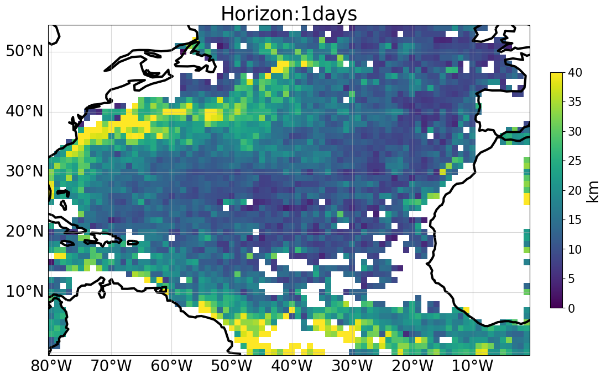

Benchmark DUACS North Atlantic Lagrangian Cumulative Distance#
2023-04-27 DUACS_SSH_BENCHMARK_DEMO
Authors: CLS & Datlas Copyright: 2023 CLS & Datlas License: MIT
Benchmark of DUACS sea surface height maps
Benchmark of DUACS sea surface height maps
The notebook aims to evaluate the sea surface height maps produced by the DUACS system.
<h5> These maps are equivalent to the SEALEVEL_GLO_PHY_L4_MY_008_047 product distributed by the Copernicus Marine Service, except that a nadir altimeter (SARAL/Altika, SEALEVEL_GLO_PHY_L3_MY_008_062 product) has been excluded from the mapping. </h5>
<h5> We provide below a demonstration of the validation of these maps against the trajectories of independent drifters distributed by CMEMS </h5>
1. Import packages#
[1]:
import os
import numpy as np
import xarray as xr
#from xmovie import Movie
import matplotlib
import matplotlib.pylab as plt
#import cartopy.crs as ccrs
#from cartopy.mpl.gridliner import LONGITUDE_FORMATTER, LATITUDE_FORMATTER
import matplotlib.ticker as mticker
import cmocean
#from conv_glo2 import read_drifters
from scipy.interpolate import RegularGridInterpolator
import pickle
import gc
from matplotlib import cm
import warnings
warnings.filterwarnings('ignore')
%matplotlib inline
import sys
sys.path.append('..')
from src.mod_plot import *
from src.mod_traj import *
from src.mod_compare import regional_zoom
2. Setup parameters#
[3]:
method_name = 'DUACS_NAtl'
time_min = '2019-01-01' # time min for analysis
time_max = '2019-12-31' # time max for analysis
dir_out = f'../results/' # output directory path
prefix_out = 'dict_drifter_adv'
results_out = 'deviat_uv_'+method_name+'.nc'
if not os.path.exists(dir_out):
os.system('mkdir '+dir_out)
# Gulf Stream region
region = 'NAtl'
lon_min = 280 # domain min longitude
lon_max = 360 # domain max longitude
lat_min = 0. # domain min latitude
lat_max = 55. # domain max latitude
box_lonlat_GS = {'lon_min':lon_min,'lon_max':lon_max,'lat_min':lat_min,'lat_max':lat_max}
3. Maps to evaluate#
3.1 Download maps#
[4]:
path_maps = f'../data/maps/DUACS_global_allsat-alg/dt*'
maps = xr.open_mfdataset(path_maps)
maps = maps.sel({'longitude':slice(lon_min-0.5,lon_max+0.5)})
maps = maps.sel({'latitude':slice(lat_min-0.5,lat_max+0.5)})
maps
[4]:
<xarray.Dataset>
Dimensions: (latitude: 224, longitude: 322, time: 365)
Coordinates:
* latitude (latitude) float32 -0.375 -0.125 0.125 ... 54.88 55.12 55.38
* longitude (longitude) float64 279.6 279.9 280.1 280.4 ... 359.4 359.6 359.9
* time (time) datetime64[ns] 2019-01-01 2019-01-02 ... 2019-12-31
Data variables:
sla (time, latitude, longitude) float64 dask.array<chunksize=(1, 224, 322), meta=np.ndarray>
ugosa (time, latitude, longitude) float64 dask.array<chunksize=(1, 224, 322), meta=np.ndarray>
vgosa (time, latitude, longitude) float64 dask.array<chunksize=(1, 224, 322), meta=np.ndarray>
adt (time, latitude, longitude) float64 dask.array<chunksize=(1, 224, 322), meta=np.ndarray>
ugos (time, latitude, longitude) float64 dask.array<chunksize=(1, 224, 322), meta=np.ndarray>
vgos (time, latitude, longitude) float64 dask.array<chunksize=(1, 224, 322), meta=np.ndarray>3.2 Retrieve maps info#
[5]:
time = maps.time.values
lon = maps.longitude.values
lat = maps.latitude.values
time = (time.astype('datetime64[h]') - np.datetime64('2019-01-01')).astype(int)
Nt = time[-1]
u_maps = maps.ugos
v_maps = maps.vgos
U_maps = (u_maps**2+v_maps**2)**0.5
4. Independant drifters#
4.1 Download drifters#
[6]:
path_drifters = '../data/independent_drifters/uv*'
ds_drifters = xr.open_mfdataset(path_drifters,concat_dim='time',combine='nested')
ds_drifters
[6]:
<xarray.Dataset>
Dimensions: (time: 2156405)
Coordinates:
* time (time) datetime64[ns] 2019-01-01 ... 2019-12-31
latitude (time) float32 dask.array<chunksize=(5559,), meta=np.ndarray>
longitude (time) float32 dask.array<chunksize=(5559,), meta=np.ndarray>
Data variables:
EWCT (time) float32 dask.array<chunksize=(5559,), meta=np.ndarray>
NSCT (time) float32 dask.array<chunksize=(5559,), meta=np.ndarray>
sensor_id (time) float64 dask.array<chunksize=(5559,), meta=np.ndarray>
Attributes: (12/46)
data_type: OceanSITES trajectory data
format_version: 2.0
platform_code: 116275
date_update: 2020-10-13T12:17:40Z
institution: AOML
institution_edmo_code: 1799
... ...
deployment_lat: -58.44
last_longitude_observation: 82.75
last_latitude_observation: -18.49
date_drog_lost: 2017-01-21T03:37:00Z
death_type: stop transmitting
last_date_observation: 2019-01-16T01:51:00Z4.2 Prepare drifter data#
[7]:
%%time
ind, time_drifter, lon_drifter, lat_drifter, id_drifter= prepare_drifter_data(ds_drifters,maps)
CPU times: user 1min 58s, sys: 14.6 s, total: 2min 12s
Wall time: 1min 50s
5. Interpolate maps at drifters locations#
[8]:
%%time
fu = RegularGridInterpolator((time, lat, lon), u_maps.values)
fv = RegularGridInterpolator((time, lat, lon), v_maps.values)
CPU times: user 8.79 s, sys: 2.45 s, total: 11.2 s
Wall time: 18.6 s
6. Artificial drifter trajectories#
6.1 Trajectory parameters and initialization#
[9]:
nday = 5
dt_h = 24
mode = 'euler'
write = False
Np = time_drifter.size
horizons = np.arange(0,nday*24/dt_h+1)
dict_drifter_adv_maps = {0:{'time':time_drifter,
'lon':lon_drifter,
'lat':lat_drifter,
'id':id_drifter}
}
horizons
[9]:
array([0., 1., 2., 3., 4., 5.])
6.2 Compute trajectories#
[10]:
%%time
dict_drifter_adv_maps = compute_traj(dict_drifter_adv_maps, horizons, fu, fv ,Np, Nt, dt_h, method_name, dir_out, prefix_out, mode, write)
h 1.0
h 2.0.0
h 3.0.0
h 4.0.0
h 5.0.0
CPU times: user 31.3 ms, sys: 115 ms, total: 146 ms
Wall time: 195 ms
7. Compute deviation#
[11]:
# Deviation = Cumulative distance between artificial and real trajectories
# Average deviation by bins
lon_out=np.arange(lon_min, lon_max, 1)
lat_out=np.arange(lat_min, lat_max, 1)
horizon_days = [1,2,3,4,5]
dev_maps, var_dev_maps, dmean = compute_deviation(dict_drifter_adv_maps, Nt, dt_h, horizon_days,lon_out,lat_out, dir_out, method_name, results_out)
8. Plots#
8.1 Plot deviation maps at different horizons#
[12]:
horizon_plots = [1,2,3,4,5]
horizon_plot_max = [40,80,125,150,200]
plot_traj_deviation_maps( lon_out, lat_out, dev_maps, dt_h,horizon_plots,horizon_plot_max,method_name)



8.2 Plot spatially averaged deviation as a function of horizons#
[6]:
plot_meantraj_deviation(dir_out)

[7]:
plot_meantraj_deviation(dir_out, just_basin='NAtl')

[ ]: